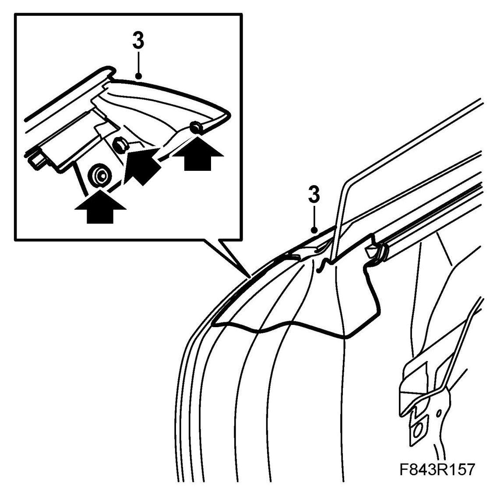
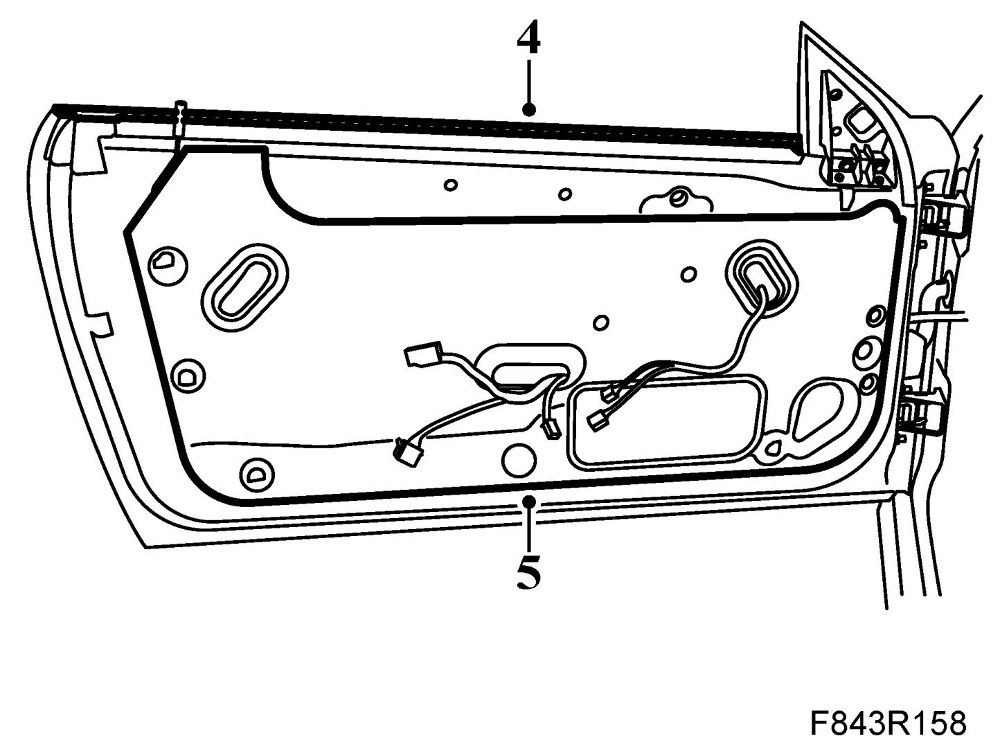
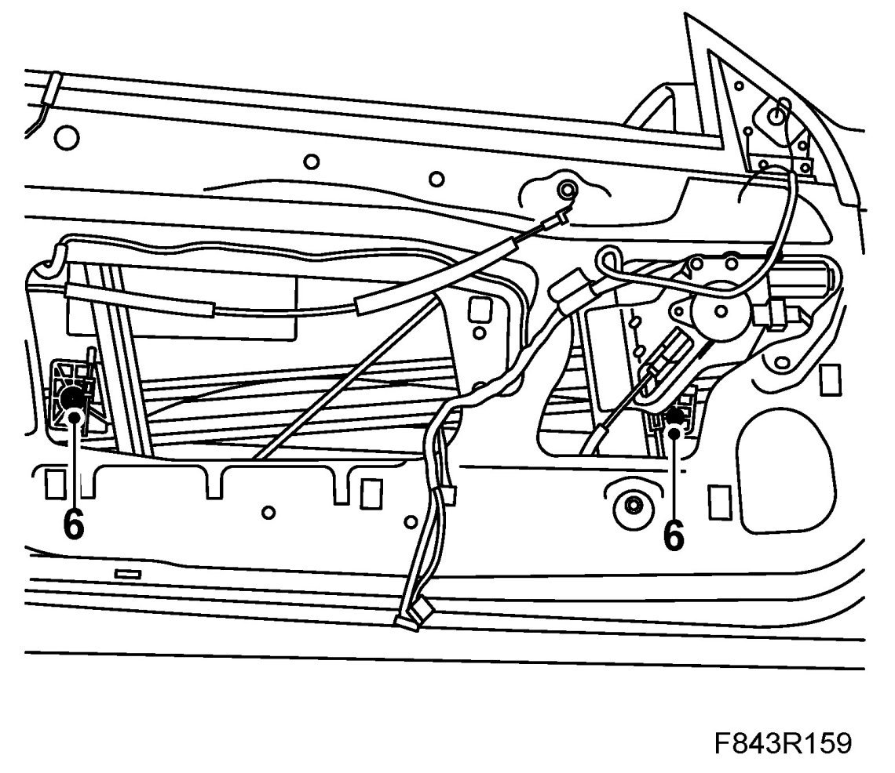
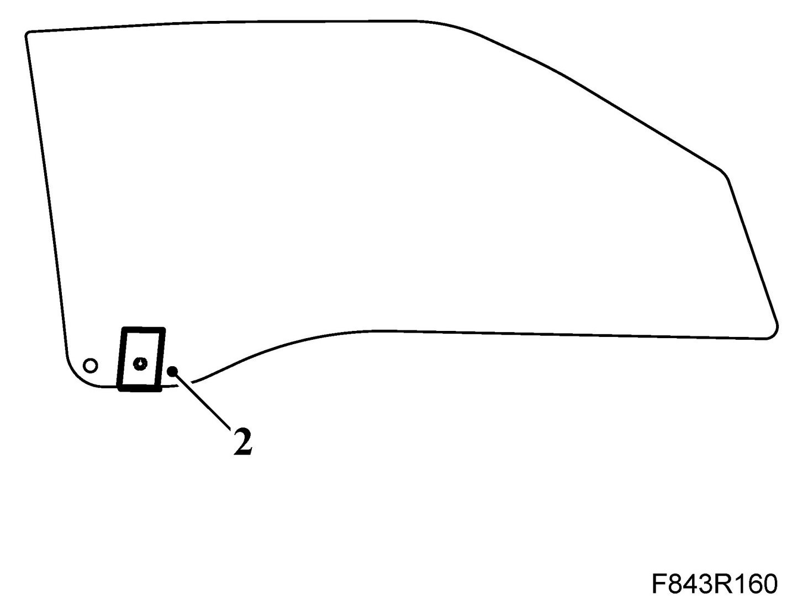
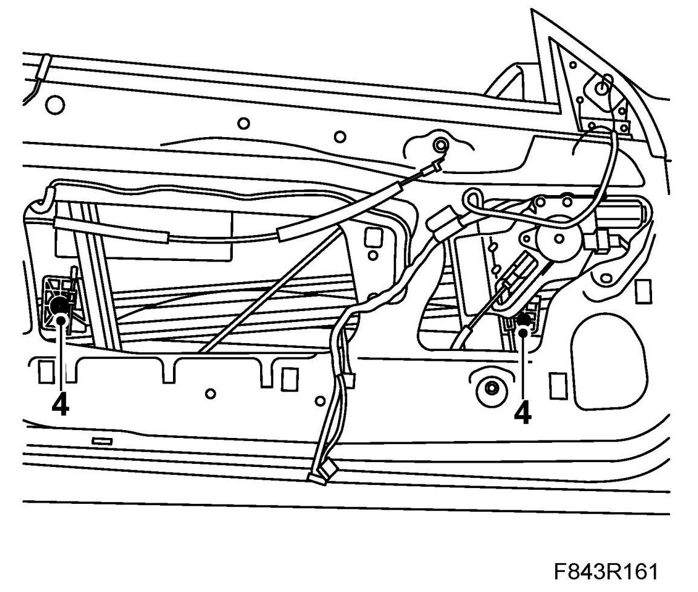
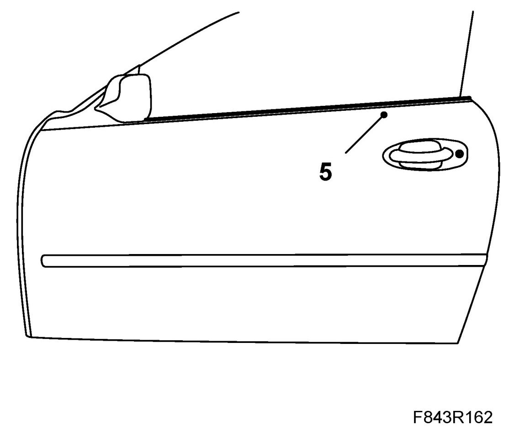

Side Window, Door, CV
Side Window, Door, CV
To remove
1. Open the door window fully and then raise it approx. 10 cm.
2. Remove Door trim, CV.
3. Carefully pull out the fixing plugs from the rear portion of the outer weatherstrip. Carefully fold up the weatherstrip, starting at the rear and working towards the door mirror base.

4. Remove the inner weatherstrip.

5. Remove the water barrier.
6. Loosen the forward screw and remove the rear screw holding the door window. Lift out the door window.

To fit
1. If necessary lower the lift mechanism until the door window screws are accessible.
2. If necessary fit the plastic mount to the door window.

3. Manoeuvre the door window in from above and locate it in the mounting position.
4. Fit the rear screw and tighten the forward screw holding the door window.

5. Locate the outer weatherstrip in position and push the fixing plugs into place.

6. Fit the inner weatherstrip. Check that it is correctly located against the outer weatherstrip.
7. Test the operation of the door window and adjust if necessary, see Adjustment of the door mirror base seal and windows.
8. Fit the water barrier.
9. Fit The door trim.
10. Cars with pinch protection: Perform Calibration of pinch protection